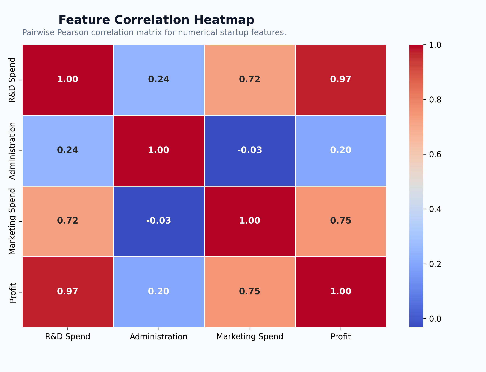
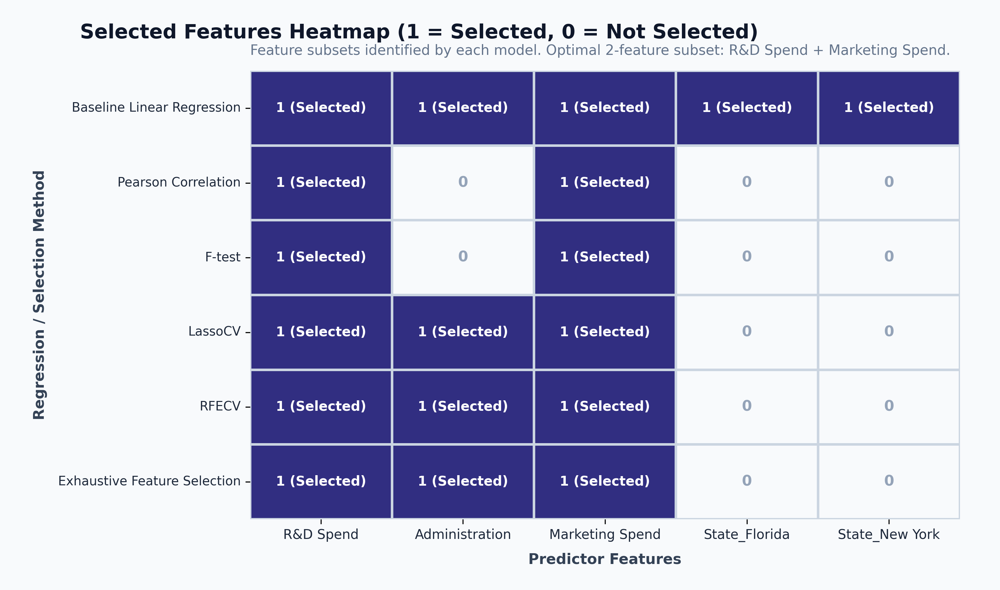
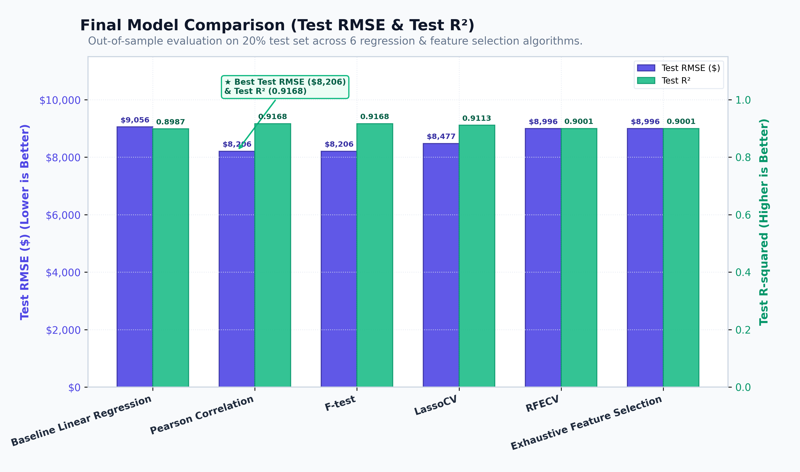

Compare 6 Machine Learning Feature Selection Algorithms (Pearson Correlation, F-test, LassoCV, RFECV, Exhaustive Search, and Baseline OLS). Explore the bias-variance tradeoff across feature counts \(k = 1 \dots 5\), pinpointing the 2-feature optimal sweet spot and the 5-feature overfitting cliff.
| Predictor | Estimate (β) | Std. Error | t-Stat | p-Value | 95% Conf. Int | VIF |
|---|
| Rank | Sample ID | Actual Profit | Predicted Profit | Residual ($) | Abs Error | % Error | Diagnostic Status |
|---|
Supplementary diagnostic visualizations, correlation matrices, consensus matrices, and cross-validation summaries from the local experiment.

Shows strong linear relationship between R&D Spend and Profit (r = 0.97) and moderate correlation with Marketing Spend (r = 0.75). Administration has very low correlation with Profit (r = 0.20), explaining its exclusion in parsimonious models.

Compares binary feature choices across all 6 methods. Notice that R&D Spend is unanimously selected by 100% of methods, followed by Marketing Spend (selected by 5 of 6), while State dummies are only retained by the full 5-feature baseline and RFECV.

Dual-bar visualization contrasting Test RMSE ($) (indigo) and Test R² (emerald). Pearson Correlation and F-test tie for the lowest test error ($8,206.33), outperforming the full Baseline OLS ($9,055.96) by over $849 per startup.
| Experiment Component | Specification | Purpose / Implementation Detail |
|---|---|---|
| Dataset Partition | 80% Train (40 rows) / 20% Test (10 rows) | Fixed random_state=42 for exact reproducible evaluation. |
| Cross Validation | 5-Fold K-Fold CV | KFold(n_splits=5, shuffle=True, random_state=42) prevents fold leakage. |
| Categorical Encoding | Two Dummies with Intercept | OneHotEncoder(drop='first') drops California as base level to avoid the dummy variable trap. |
| Optimal Sweet Spot | k = 2 (R&D Spend + Marketing Spend) | Minimizes CV RMSE ($9,682.56) and Test RMSE ($8,206.33) with zero multicollinearity (VIF = 2.26). |